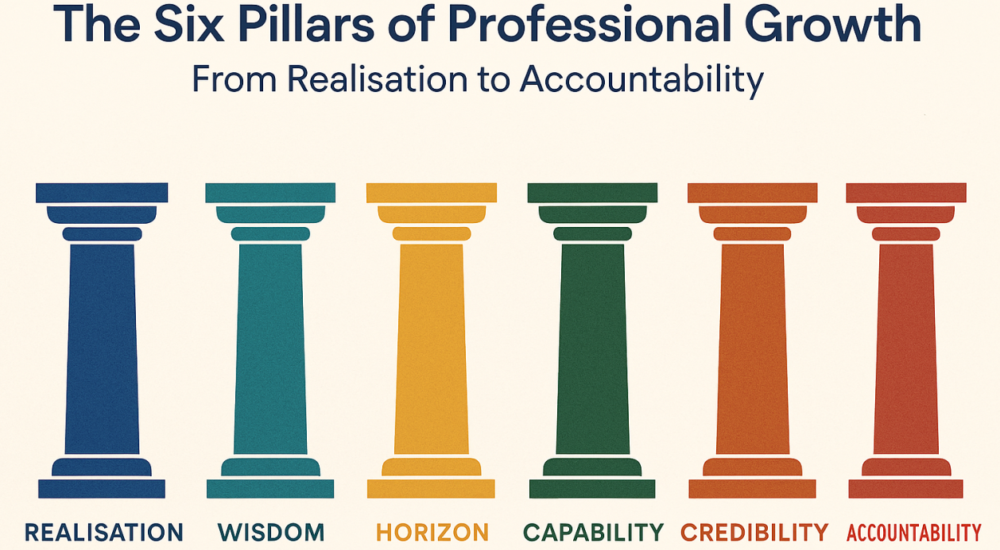

Does the Concept of Professionalism Apply to the Creative Industries?
My perspective on professionalism, ethical standards, collaboration and reputation in game development.
Introduction
When thinking about the creative industries, I imagine people developing video games, designing artwork, producing animations and creating experiences that entertain or inspire others. Creativity and imagination are obviously important in these fields, but I believe professionalism is just as essential. After all, being creative does not automatically mean someone is capable of working effectively with others or delivering a project to an acceptable standard.
As someone studying Game Design and Development, I have come to appreciate that developing games involves considerably more than programming mechanics or creating interesting ideas. There are deadlines to meet, problems to solve, people to communicate with and responsibilities that cannot simply be ignored.
Personally, I believe professionalism absolutely applies to the creative industries. In fact, I would argue that it is particularly important because creative projects frequently involve people from different disciplines working towards the same goal.
However, what does being professional actually mean, and how should this influence the way we approach game development?
What Does Professionalism Actually Mean?
When I hear the word professionalism, I initially think about qualities such as reliability, honesty, communication and treating people respectfully. While these might sound like fairly basic expectations, I believe they are essential characteristics for anyone hoping to establish a successful career.
Professionalism is sometimes associated with formal clothing, corporate environments and strict working practices. However, I don't think someone needs to wear a suit or work in an office to behave professionally.
For example, an independent game developer working from home can demonstrate professionalism by communicating clearly with clients, meeting agreed deadlines and producing work to a suitable standard.
Equally, someone employed by a large game development studio could behave unprofessionally by refusing to cooperate with colleagues, taking credit for another person's work or consistently ignoring their responsibilities.
The Association for Computing Machinery's Code of Ethics highlights responsibilities such as honesty, fairness, respecting others and maintaining professional competence.
Although this guidance applies broadly to computing professionals, I think many of these principles are directly relevant to game development.
For me, professionalism is ultimately about how someone approaches their work and how their behaviour affects the people around them.
The Four Pillars of Professionalism
One way I find it useful to understand professionalism is through four key pillars: Commitment, Integrity, Responsibility and Accountability.
Although these qualities are closely connected, I believe each represents a different part of what makes someone professional.
Commitment
Commitment involves putting genuine effort into your work and remaining dedicated to achieving your objectives.
In game development, I think this means more than simply completing the minimum requirements of a project. It also involves trying to improve the quality of the finished product, developing new skills and remaining motivated when difficulties arise.
For example, while developing games for university, I have had to work with different engines and programming techniques. Learning something unfamiliar can be frustrating, particularly when a mechanic does not behave as expected.
However, I believe continuing to investigate problems and improve my understanding demonstrates commitment to becoming a better developer.
Integrity
Integrity is about being honest and following ethical principles, even when doing so might be inconvenient.
One example within game development is recognising the contributions of other people.
If I use artwork, music or code created by someone else, I believe it is important to follow the relevant licensing conditions and provide appropriate attribution.
Similarly, if I am working on a group project, I should not claim responsibility for work completed by another team member.
The International Game Developers Association (IGDA) Code of Ethics specifically addresses honest representation of work, appropriate credit and respect for intellectual property.
I strongly agree with these principles because I would not appreciate someone presenting my own work as theirs.
Responsibility
Responsibility means understanding what is expected of you and taking appropriate action to fulfil those expectations.
In a development team, one person's responsibilities can directly affect everyone else's progress.
For example, if a programmer is responsible for implementing player movement, other developers might be unable to test their own features properly until that system is functional.
I believe this makes communication especially important. If I encounter a problem that could delay a project, I should communicate it rather than remaining silent and hoping it resolves itself.
Accountability
Accountability is closely related to responsibility, but I see an important distinction between them.
Responsibility concerns what I am expected to do, while accountability involves accepting ownership of the outcome.
If I introduce a programming error, I believe the professional response is to acknowledge the issue, investigate what caused it and work towards a solution.
Blaming other people or pretending that a problem does not exist is unlikely to help anyone.
I think this is particularly relevant within software development, where mistakes are almost unavoidable. What matters is how someone responds when those mistakes occur.

Why Professionalism Matters in Game Development
Game development is a collaborative industry involving programmers, artists, designers, animators, audio specialists and many other roles.
Even smaller independent projects can require people with different skills to work together.
Because of this, I believe professional behaviour is essential for maintaining productive working relationships.
For example, someone might be an extremely talented programmer, but if they refuse to communicate or regularly dismiss the opinions of other team members, their technical abilities alone may not make them a valuable colleague.
This is something I consider important when thinking about my own experience with collaborative university projects.
Working alongside other students means that everyone can have different ideas about how a game should function. I don't think disagreements are necessarily negative, because discussing different approaches can sometimes lead to better solutions.
However, those discussions need to remain respectful.
I believe constructive criticism is particularly important. Rather than simply telling someone that their idea is bad, I would prefer to explain why I think something might not work and suggest an alternative.
Likewise, I need to be willing to accept feedback about my own work.
After all, if I expect other people to listen to my suggestions, shouldn't I be prepared to listen to theirs?
Professional Codes of Conduct and Ethical Behaviour
Another important aspect of professionalism is understanding the standards established by professional organisations.
Within game development, the International Game Developers Association provides a Code of Ethics covering professional behaviour, workplace standards, inclusivity and respect for intellectual property.
I think having these guidelines is valuable because they establish expectations that go beyond simply completing a project.
For example, developers should be able to work in environments where they are treated fairly and respectfully.
The IGDA also publishes a Code of Conduct for its events and communities, setting expectations for respectful interactions and prohibiting harassment.
I believe these principles should apply regardless of whether someone works in a large studio, operates independently or is still studying.
Another relevant organisation is the World Wide Web Consortium (W3C), particularly for developers who also work with websites and online applications.
Its Code of Conduct promotes respectful participation, equitable treatment and appropriate professional behaviour.
As someone who has developed a personal portfolio website using HTML, CSS and JavaScript, I think it is useful to recognise that professionalism extends beyond game engines and programming.
It also affects how we interact with online communities, present information and treat people using the systems we create.
However, I don't believe simply publishing a code of conduct automatically creates a professional environment. Organisations and individuals must actually follow those principles for them to have any meaningful effect.
Respecting Employers, Colleagues and Clients
I believe respect is one of the most important qualities someone can demonstrate in a professional environment.
When working with colleagues, this means listening to their opinions, acknowledging their contributions and recognising that people have different strengths and experiences.
When working with an employer, I think it involves being reliable, communicating honestly and respecting reasonable workplace expectations.
For freelancers, professionalism also extends to relationships with clients.
A client might not understand the technical difficulties involved in developing a game or website, so I believe it is the developer's responsibility to explain what is realistic and communicate any limitations clearly.
For example, promising to complete an entire game within an unrealistic timeframe might initially impress a client, but failing to deliver could seriously damage the working relationship.
I would rather be honest about what I can achieve than make promises simply to secure an opportunity.
I also believe respect should work in both directions. Employers and clients have responsibilities towards developers, and professionalism should not be used as an excuse to expect unreasonable working hours or tolerate poor treatment.
Reputation and Maintaining a Professional Image
Another reason I believe professionalism matters is the effect it can have on someone's reputation.
The creative industries often involve networking, recommendations and collaboration. As a result, the way someone behaves could influence whether other people want to work with them in the future.
For someone beginning their career, I think establishing a positive reputation is particularly valuable.
This also connects to the importance of maintaining an online presence.
Through platforms such as LinkedIn and GitHub, developers can showcase their abilities and communicate with others in the industry.
However, I think professional behaviour online is just as important as professional behaviour in person.
For example, publicly insulting other developers, responding aggressively to criticism or deliberately misrepresenting achievements could undermine the impression created by an otherwise impressive portfolio.
I want my own online presence to reflect someone who is enthusiastic about game development, willing to learn and capable of working constructively with others.
That does not mean I should avoid expressing opinions or disagreements. Instead, I believe it means communicating those opinions respectfully and being prepared to support them with reasonable arguments.
Can Professionalism Limit Creativity?
One argument worth considering is whether professional expectations could restrict creativity.
Creative work often involves experimentation, unconventional ideas and taking risks. If developers become too concerned about following procedures, could that discourage innovation?
Personally, I don't believe professionalism and creativity need to conflict.
I think developers should have the freedom to experiment and challenge established approaches, provided they continue to respect the people they work with and understand their responsibilities.
For example, proposing an unusual gameplay mechanic is not unprofessional. However, refusing to consider feedback or ignoring agreed project requirements could be.
In my opinion, professionalism should provide a foundation that allows creativity to flourish rather than acting as a restriction.
A team that communicates effectively and trusts one another may be better positioned to experiment because its members can discuss ideas openly without unnecessary conflict.
Conclusion
Overall, I strongly believe that professionalism applies to the creative industries and is particularly important within game development.
Although creativity and technical ability are essential, I don't think they are enough on their own to establish a successful career.
The four pillars of professionalism — commitment, integrity, responsibility and accountability — provide a useful foundation for understanding how developers should approach their work.
Professional codes of conduct, such as those published by the IGDA and W3C, also demonstrate that ethical behaviour, respect and fairness are recognised expectations within the wider industry.
As I continue studying game development, I want to improve not only my technical abilities but also the way I communicate, collaborate and manage my responsibilities.
I believe that being a good developer involves more than creating a good game. It also involves being someone other people can trust, respect and enjoy working alongside.
Ultimately, creativity might help someone produce an impressive project, but I think professionalism is what helps turn those abilities into a sustainable career.
References
- International Game Developers Association (IGDA) — Core Values and Code of Ethics. Professional expectations covering integrity, appropriate credit, intellectual property, workplace standards and ethical behaviour.
- International Game Developers Association (IGDA) — Code of Conduct. Standards for respectful behaviour at industry events and within developer communities.
- Association for Computing Machinery (ACM) — Code of Ethics and Professional Conduct. Ethical principles for computing professionals, including honesty, competence, fairness and responsibility.
- World Wide Web Consortium (W3C) — Code of Conduct. Guidance on respectful collaboration, equitable treatment and professional behaviour.
- International Game Developers Association (IGDA) — Game Industry Standards. Industry guidance relating to professional standards and the recognition of developers' contributions.
- Matthew Peacock — Personal Portfolio. Examples of personal and university game development work.